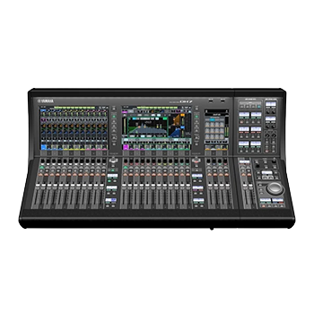

Digital
DM7-EX
Digital Mixing Console
The DM7-EX expands Yamaha's DM7 platform with additional processing power and I/O flexibility, combining the console's touch-driven Vintage Channel Strip and Portico 5033/5043 modeled processing with a scalable engine built for demanding touring and installed applications.